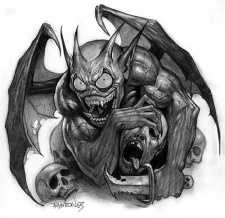
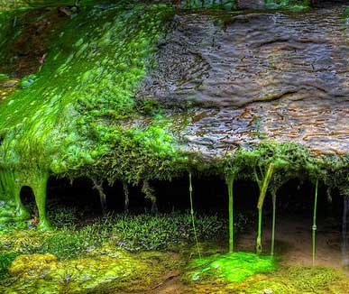

| Climate/Terrain | Palude e zone umide (Lower Planes) |
| Frequency | Rare (Uncommon) |
| Organization | Small Group |
| Activity Cycle | Any |
| Diet | Carnivoro |
| Intelligence | Very Intelligent (11) 11 punti combattimento |
| Treasure | Vedi Sotto |
| Alignment | Neutral Evil |
| No. Appearing | 1d3+1 |
| Armor Class | 4 |
| Movement | 12 Fl. 16 (B) |
| Hit Dice | 3+3 |
| Thac0 | 17 |
| No. of Attacks | 1 Morso / 1 Arma Small |
| Damage / Attacks | 1d3+1 / Arma |
| Special Attacks | Soffio Acido / Malattia |
| Special Defenses |
Immunità all’Acido, Sangue Acido, Assorbimento Danni Non Magici, Zona di Melma Acida (Rigenerazione) |
| Magic Resistance | 20% |
| Size | Small (1 m. di altezza) |
| Morale | Elite (14) |
| XP value | 375 |
Descrizione
Gli Spiriti delle Pozze Acide sono creature demoniache inferiori. Queste creature non possono considerarsi parti delle razze demoniache maggiori. In realtà, gli stessi demoni ritengono che queste creature inferiori non possono essere considerate "vere" creature demoniache. Gli Spiriti delle Pozze Acide hanno la forma di un piccolo umanoide alato e cornuto. Per quanto di piccole dimensioni, però, il loro fisico appare compatto e muscoloso. Queste creature, infatti, possiedono una forza non indifferente (in termini di gioco si considerino essere dotati di una forza pari a 15).
Combat
Lo Spirito delle Pozze Acide è una creatura pericolosa. Combatte ferocemente cercando di sfruttare le debolezze dell'avversario. Quando si trova a confrontare creature più forti di lui in corpo a corpo, questo piccolo demone non esita a porre in essere una strategia di indebolimento basata su attacchi a distanza, piccole schermaglie e ritirate strategiche.
Lo Spirito delle Pozze Acide attacca con il suo morso ed un’arma piccola, solitamente utilizzano il pugnale del tipo Pih-kaetta (iniziativa +5, danni 2d3). Il loro morso può essere causa di contagio per gli esseri del primo piano materiale. Ogni volta che costoro colpiscono una creatura con il morso la stessa è esposta al rischio di subire la malattia del Rogo Muscolare (TS contro Raggio della Morte per evitare il contagio).
Lo Spirito delle Pozze Acide, in luogo dei suoi normali attacchi, può soffiare acido fino a 7 metri di distanza su una vittima designata. Si tratta di un attacco, ad iniziativa +2, su una singola creatura la quale può provare a schivare il getto superando un tiro salvezza contro pietrificazione modificato dal reaction adjustment della destrezza e da un modificatore dovuto alla loro dimensione: Gargantuan: - 4; Huge: - 3; Large: -2; Medium: 0; Small: +1; Tiny: +2. Se il tiro salvezza riesce costoro non subiranno alcun danno altrimenti saranno investiti dal getto e subiranno 2d3 danni da acido. Questa creature demoniaca può effettuare uno spruzzo ogni 5 rounds di combattimento.
Il sangue dello Spirito delle Pozze Acide è un acido concentrato capace di ferire chi lo attacca in corpo a corpo. Ogni volta che una creatura attacca il demone in corpo a corpo, ferendolo, costei avrà una possibilità su 1d20 pari ai danni effettivamente inflitti al demone di essere colpita da uno spruzzo acido subendo 1d3+2 danni da acido. Inoltre, il demone è totalmente immune ad ogni attacco basato sull’acido, sia magico che normale.
Lo Spirito delle
Pozze Acide possiede anche una leggera immunità alle armi non magiche. Costui
riduce il danno prodotto da tali armi di 3 punti, potendo anche azzerare
interamente il danno subito.
Habitat/Society
Gli Spiriti delle Pozze Acide odiano il clima secco, per tale motivo costoro vivono in zone paludose, acquitrini, caverne e sotterranei umidi. Prediligono, quindi, ambienti malsani e dove è difficile spostarsi camminando. Queste creature demoniache, infatti, sono abbastanza intelligenti da insediarsi in una zona dove la loro capacità di volare può fare la differenza. Gli Spiriti delle Pozze sono creature malvagie ed indisciplinate che rispettano solo la legge del più forte. Comunemente vivono in piccoli gruppi isolati dove vige un regime di anarchia assoluta. In altri casi, invece, possono trovarsi al servizio di demoni più potenti che li utilizzano come propri guardiani, sentinelle o razziatori. In questi casi la loro lealtà è direttamente proporzionale al timore legato alla potenza del demone superiore ed alle punizioni che quest'ultimo può infliggere in caso di disobbedienza e codardia.
Ecology
Gli
Spiriti delle Pozze Acide sfruttano ogni occasione per recarsi e stabilirsi nel
primo piano materiale. In questa dimensione, infatti, le loro capacità
demoniache sono tali da renderle creature temibili nonostante le piccole
dimensioni. Amano cibarsi della carne degli esseri viventi del primo piano
materiale. Costoro sono soliti costruire una tana accessibile solo mediante il
volo oppure attraverso cunicoli utilizzabili solo da chi ha la loro piccola
dimensione. All'interno della tana degli Spiriti delle Pozze Acide vi sono delle
piccole zone ricoperte di materiale acido melmoso. Si tratta di un materiale
denso e melmoso creato dagli stessi demoni miscelando melma e fango a propri
residui gastrici. Solitamente ogni piccolo demone ha una propria zona di melma
acida nella quale rintanarsi in caso di pericolo. Si tratta di una piccola pozza
o di un ammasso di questo materiale abbastanza grande da contenere interamente
il demone. Entrare ed uscire dalla pozza rappresenta per il demone un'azione
complessa cumulabile solo con un'azione di mezzo movimento. Tale zona
costituisce un rifugio ed una zona rigenerativa per il demone. Quando un demone
si immerge nella pozza costui
rigenera 1 punto ferita al round.
Il demone immerso può essere attaccato con i seguenti modificatori
Armi da tiro o da lancio:
-3 al tiro per colpire e
-2 ad ogni dado di danno,
Armi in corpo a corpo:
-2 al tiro per colpire e
-1 ad ogni dado di danno,
Magie:
30% di possibilità di
fallire se centrate sul demone, in ogni caso costui otterrà +3 ai propri tiri
salvezza.
Il contatto con la melma provoca, inoltre,
1d3 danni da acido
alle creature viventi che la
toccano (esseri il cui corpo non è di materia organica, come i costruiti, non
subiscono invece alcun danno). Per questo motivo chi attacca un demone immerso
in corpo a corpo ha una certa possibilità di ferirsi ad ogni suo attacco per il
medesimo ammontare di danno da acido. La possibilità cambia a seconda della
dimensione dell'arma utilizzata dall'attaccante:
Attacco fisico
- Danno automatico
Arma small
- 75% di possibilità di danno
Arma medium
- 50% di possibilità di danno
Arma large
- 25% di possibilità di danno
Arma lunga almeno 3 metri
- 10% di possibilità di danno
Queste creature devono spendere tempo, ogni giorno, a mantenere la propria zona
di melma acida. Una volta ucciso uno Spirito delle Pozze Acide, infatti, dopo
pochi giorni anche la sua pozza sarà dissolta.
Mystical Resource Sourge (Membrana delle Ali) Quantità: 1, Presenza 33% - Scuola di Magia: Conjuration/Summoning - Qualità della Risorsa: Common.

Tesoro
Gli Spiriti delle Pozze Acide hanno una predilezione per le gemme verdi dette diopside, che sono soliti incastonare nel proprio corpo. Quando uno di questi demoni muore il suo corpo è rapidamento consumato dall’acido in una piccola pozza fumante e vi sono 2 possibilità su 1d6 che lo stesso lasci 1d3 di queste gemme (di cui occorre verificare caratura e qualità). Oltre a tali gemme, nella tana di queste creature è possibile rinvenire oggetti posseduti dalle loro vittime che, una volta uccise, sono trasportate nella tana come cibo e/o trofeo. Queste creature, infatti, conoscono il possibile valore di scambio dei tesori. Le possibilità di ritrovamento di tesori nella loro tana è indicata nella seguente tabella:
| % di ritrovamento | TIPOLOGIA | Ammontare ritrovato |
| 10 % | Gemme | 1d3 |
| 33 % | Monete d'oro | 1d20 * 10 + 1d100 |
| 33 % | Monete d'argento | 3d20 * 10 + 1d100 |
| 7 % | Oggetto magico | 1 |
| 25 % | Arma | 1d2 |
| 20 % | Armatura | 1 |